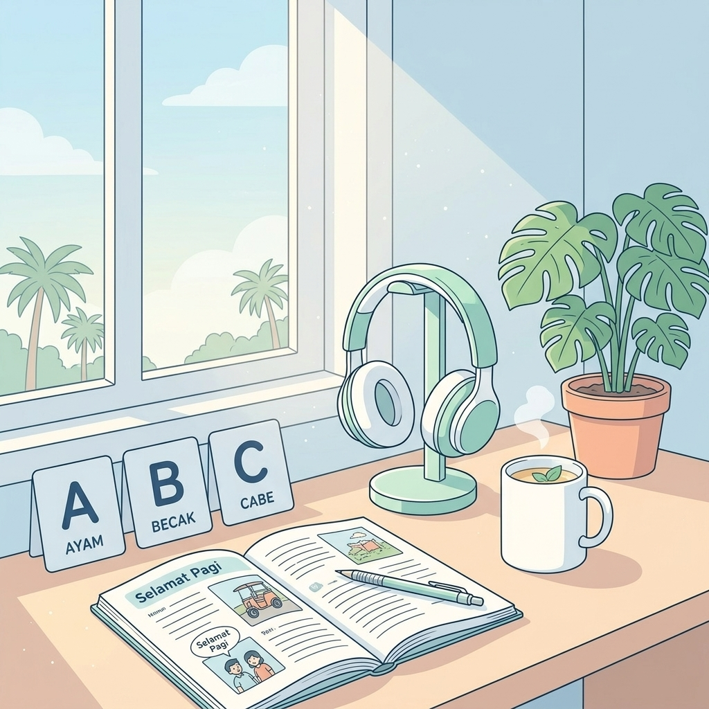
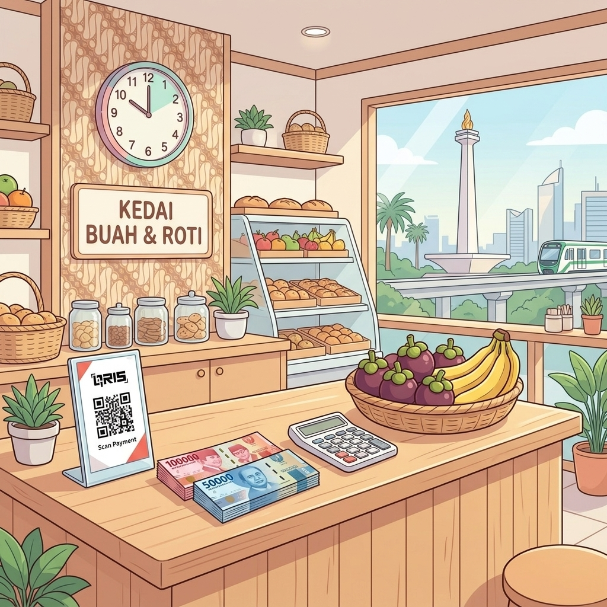

給印尼文小白的 3 大安心超能力（全亞洲最好學的語言！）
印尼語採用拉丁字母，拼音即讀音；無聲調、無動詞時態曲折、語序與中文高度一致！
印尼語 5 階通關全景學習路線圖 (BIPA 認證體系)
從零基礎發音拼讀到高階詞綴口語，科學化階梯設計，每階段設定明確能力目標與詞彙里程碑：
東南亞主要外語 vs 英語 學習門檻對照表
| 比較維度 | 印尼語 (Bahasa Indonesia) | 越南語 (Tiếng Việt) | 泰語 (ภาษาไทย) | 英語 (English) |
|---|---|---|---|---|
| 文字系統 | 26 拉丁字母 (同英文) | 拉丁字母 (附聲調符號) | 44 子音 + 32 母音字母 | 26 拉丁字母 (發音不規則) |
| 聲調負擔 | 零聲調 (平讀即可) | 6 個聲調 (極易混淆) | 5 個聲調 (高低起伏) | 無聲調 (但有重音變化) |
| 動詞變化 | 完全無時態曲折 (不變形) | 無曲折變化 | 無曲折變化 | 過去式、完成式、單複數變形 |
| 語序思維 | SVO (與中文高度契合) | SVO (修飾語後置) | SVO (修飾語後置) | SVO (倒裝、假主詞等複雜) |
| 中文者上手期 | 3-7 天即可開口拼讀 | 2-3 週 (突破聲調) | 1-2 個月 (記憶文字) | 需長期文法訓練 |
| 實用覆蓋人口 | 3 億+ (印尼、馬來西亞、汶萊) | 約 1 億 | 約 7,000 萬 | 全球通用 |
5 階漸進式闖關地圖

Level 0: 零基礎發音與拼讀 (Alfabet)
26 字母、C/J/R/K 關鍵音、雙母音與倒數第二音節重音原則。
Level 1: 稱謂社交計算器與核心語法
長幼尊卑 (Mas/Mbak/Pak/Bu)、SVO 語序、兩大否定詞 (Tidak vs Bukan)。

Level 2: 數字時間與印尼盾轉換
0 到百萬計數、Rp 貨幣讀音換算器、星期日期與時間生活表達。
Level 3: 30 大實戰會話 (8 大生活情境分類 x 中印雙語朗讀)
交通、美食、住宿、購物、社交、旅遊、商務、醫療應急全情境涵蓋，支援雙語循序播放與盲聽測驗。
Level 4: 智能跟讀打分與 Bahasa Gaul 口語
麥克風即時語音比對評分、meN- 詞綴積木與 TikTok 網民迷因密碼庫。
印尼十大名城群島生活文化導覽 (Peta 10 Kota Nusantara)
涵蓋雅加達 (Jakarta)、泗水 (Surabaya)、萬隆 (Bandung)、棉蘭 (Medan)、三寶瓏 (Semarang)、巨港 (Palembang)、望加錫 (Makassar)、日惹 (Yogyakarta)、峇里島 (Bali)、萬丹 (Banten)！點選探索各城 Wikipedia 權威數據、著名地標景致、代表美食與道地方言發音：
印尼語字母與發音完整系統 (Alfabet & Fonetik)
印尼語使用 26 個拉丁字母，無聲調，重音普遍在倒數第二音節。點選子標籤探索母音辨析、關鍵子音、音節拼讀矩陣與發音規則！
印尼語關鍵發音器官與氣流阻礙位置圖解
掌握印尼語與中文發音的關鍵部位差異，避開 C、J、K、R 的發音陷阱：
5 大關鍵子音發音避坑全診斷表
| 字母 | IPA 音標 | 直觀中文諧音口訣 | 最常見致命錯誤 | 正確認讀單字 | 試聽 |
|---|---|---|---|---|---|
| C | /tʃ/ | 如同注音「ㄔ」、英語 chair | 誤讀為 /k/ (咖) 或 /s/ (西) | Cinta (愛), Cuci (洗), Cepat (快) | |
| J | /dʒ/ | 如同注音「ㄓ/ㄐ」、英語 jam | 誤讀成注音「ㄖ」或德文 /j/ (也) | Jalan (走/路), Jam (小時/鐘) | |
| 字尾 K | /ʔ/ | 喉塞音（短促收音，聲帶驟閉不送氣） | 誤把字尾 K 大力噴氣讀出「克」 | Tidak (不), Bapak (先生), Masak (煮) | |
| R | /r/ | 舌尖齒齦顫音（放鬆舌尖靠氣流衝擊） | 誤發成美音捲舌 R 或喉嚨小舌音 | Rumah (家), Rendang (仁當), Roti (麵包) | |
| 字尾 H | /h/ | 輕輕哈氣（清晰送氣後收口） | 把字尾 H 吞掉直接不唸 | Sudah (已經), Rumah (家), Murah (便宜) |
例如 Cinta 唸成 "Chin-ta"（愛），Cuci (Chu-chi 洗)，絕不發 /k/ 或 /s/！
如 Rendang, Rumah。初學者若彈不出來，可先以清晰的「ㄌ/ㄦ」過渡。
在字尾如 Tidak (Ti-da'), Bapak (Ba-pa') 聲帶迅速關閉，不噴氣，乾脆短促。
26 字母發音庫 (點擊直接試聽)
印尼語人稱稱謂計算器 (Kalkulator Sapaan)
印尼文化中稱謂至關重要！選對稱謂能拉近彼此距離，避免失禮。點選情境立即獲取稱呼與中印雙語範例！

印尼社交長幼尊卑哲學 (Sistem Kekerabatan)
印尼人非常重視輩份與社會尊重，日常交流中極少直接用「你 (Kamu)」呼喚長輩或初識者，而是親切稱呼對方為 Bapak / Pak (先生/長輩)、Ibu / Bu (女士/母親輩)、Mas (大哥/平輩男性) 或 Mbak (大姐/女性)。
印尼人際社交「尊卑親疏同心圓」禮貌體系圖
印尼文化高度重視社會輩份與群體和睦，稱謂依交往距離由外向內嚴密劃分：
印尼語人稱代詞與尊卑稱謂全景矩陣表
| 人稱維度 | 正式禮貌 (Baku) | 親近/平輩 (Akrab) | 雅加達口語 (Gaul) | 關鍵避坑守則與語義境界 |
|---|---|---|---|---|
| 第一人稱單數 (我) | Saya | Aku | Gue / Gua | 出國與職場一律用 Saya 最得體；Aku 用於情侶好友；Gue 僅限同齡平輩死黨。 |
| 第二人稱單數 (你/您) | Bapak / Ibu | Mas / Mbak / Kak | Lu / Elo | 印尼文化「以身分代人稱」，對男長輩稱 Pak，對女長輩稱 Bu，對年輕男女稱 Mas/Mbak。 |
| 第一人稱複數 (包含聽者) | Kita (我們全體) | Kita | Kita orang | Kita = 我 + 你們全體。「Kita makan yuk!」（我們一起去吃飯吧！） |
| 第一人稱複數 (排除聽者) | Kami (我們，不包括你) | Kami | - | Kami = 我與我方同伴 (對方向我提問時)。「Kami dari Taiwan.」（我們來自台灣）。 |
| 第二人稱複數 (你們) | Kalian / Bapak-bapak | Kalian | Kalian semua | 正式場合對多位長輩稱 Bapak-bapak sekalian（各位長官）。 |
| 第三人稱單數 (他/她) | Beliau (長輩尊稱) / Dia | Dia | Dia / Doi (口語男/女友) | 印尼語他與她同字 (Dia)，無性別區分；提到長輩或總統時尊稱 Beliau。 |
智能稱謂快選矩陣 (一秒找出最佳稱呼)
選擇對象條件，系統將立即為您計算最得體的「對方稱謂」與「自己自稱」：
8 大經典社交場景稱謂速查表
核心語法與句型 (Tata Bahasa Inti)
印尼語沒有動詞時態變化、無性別單複數曲折，語序與中文極為相似！

D-M 後置修飾原則 (Inverted Modifier)
印尼語核心名詞在前，形容詞在後。例如：Nasi (飯) + Goreng (炒) = Nasi Goreng (炒飯)；Mobil (車) + Merah (紅) = Mobil Merah (紅色的車)。

時間時態副詞軸 (Aspek Waktu)
動詞原形永遠不變！靠時間詞表達狀態：Sudah (已經/過去)、Sedang / Lagi (正在進行)、Akan / Mau (將要/未來)、Belum (尚未)。
印尼語核心句法：SVO 結構與時間時態副詞流向軸
印尼語動詞原形通到底，透過在動詞前後靈活插入「時間標記詞」表達狀態，語序極具中文直覺性：
否定詞四大天王 (Tidak, Bukan, Belum, Jangan) 秒殺速查表
| 否定詞 | 否定對象與功能 | 語法公式 | 錯誤對比 (Mistake vs Correct) | 實戰例句 |
|---|---|---|---|---|
| Tidak | 否定動詞 (Verb)、形容詞 (Adj) | Tidak + 動詞 / 形容詞 | ❌ Bukan lapar ➔ ✔ Tidak lapar (不餓) | Saya tidak mau pedas. (我不要辣) |
| Bukan | 否定名詞 (Noun)、身分/物品 | Bukan + 名詞 / 代詞 | ❌ Tidak guru ➔ ✔ Bukan guru (不是老師) | Ini bukan paspor saya. (這不是我的護照) |
| Belum | 否定時間狀態（尚未/還沒） | Belum + 動詞 / 完成態 | ❌ Tidak makan (不吃) ➔ ✔ Belum makan (還沒吃) | Saya belum menikah. (我尚未結婚) |
| Jangan | 祈使否定（別/千萬不要/禁止） | Jangan + 動詞 (祈使句) | ❌ Tidak masuk (沒進去) ➔ ✔ Jangan masuk (請勿進入) | Jangan lupa ya! (別忘記喔！) |
D-M 後置修飾動態組裝台 (Diterangkan-Menerangkan)
中文「形容詞在前，名詞在後」；印尼語相反，「名詞核心在最前，修飾詞放後面」！點選切換觀察結構：
Tidak vs Bukan 否定詞即時秒殺判斷器
Tidak 用於否定「動詞 / 形容詞」（不/沒有）；Bukan 用於否定「名詞 / 身份 / 物品」（不是）。點點看判斷正確答案：
數字、時間與金錢交易 (Angka & Waktu)
掌握數字與印尼盾 (Rupiah) 計價，出門購物搭車暢行無阻！

印尼盾 (Rupiah) 去零速算法
印尼盾面額大：Ribu (千, 簡寫 k)、Juta (百萬, 簡寫 jt)。快速台幣換算：去掉三個 0 後除以 2（例如 50.000 Rp ≈ NT$ 25）。

印尼語「四段制」問候問好時間
Selamat Pagi (05-11 點早安) ➔ Selamat Siang (11-15 點午安) ➔ Selamat Sore (15-18:30 點傍晚好) ➔ Selamat Malam (18:30 後晚安)。
印尼盾 (Rupiah) 位數階梯天梯圖 & 去零速算法
告別數 0 數到眼花的焦慮！記住「3 個 0 為一個單位」與「去掉三個 0 後除以 2」快速換算台幣法則：
印尼盾實質購買力生活對照表
| 紙鈔面額 | 紙鈔顏色 | 印尼文標準讀法 | 去零折合台幣 | 在地真實消費場景體驗 |
|---|---|---|---|---|
| Rp 2.000 - 5.000 | 灰褐色 / 棕黃色 | Dua ribu - Lima ribu rupiah | 約 NT$ 4 - 10 | 小費、路邊停車費、買一罐礦泉水 (Aqua) 或炸香蕉 (Pisang goreng)。 |
| Rp 10.000 | 紫色 | Sepuluh ribu rupiah | 約 NT$ 20 | 街頭雞肉粥 (Bubur ayam)、甜茶 (Es teh manis) 或傳統市場新鮮椰子。 |
| Rp 20.000 | 綠色 | Dua puluh ribu rupiah | 約 NT$ 40 | 道地小吃店印尼炒飯 (Nasi goreng)、加多加多沙拉 (Gado-gado)。 |
| Rp 50.000 | 藍色 | Lima puluh ribu rupiah | 約 NT$ 100 | 連鎖網紅咖啡 (Kopi Kenangan) 2杯、市區長途 Grab 機車叫車。 |
| Rp 100.000 | 紅色 (最大面額) | Seratus ribu rupiah | 約 NT$ 200 | 商場連鎖餐廳豐盛雙人火鍋套餐、大賣場一週水果雜貨採購。 |
印尼盾 6 大常用紙鈔色卡速查 (點擊帶入發音)
在印尼生活購物靠「顏色認鈔票」最快！點擊任一張紙鈔立即聽標準印尼語讀法：
印尼盾 (Rupiah) 即時讀音生成器
輸入任何金額，立即查看印尼語標準讀法並點擊聽發音！
印尼四段制日常時間問候盤
印尼人不用「Good Afternoon」，而是分成四個不同時段問候：
基礎數詞 (0 - 1,000,000)
星期與常用時間副詞
核心單字庫與多維度學習記憶系統 (Vocab Flashcards)
精選 12 大生活分類、260+ 個高頻必備詞彙，支援「3D 翻轉字卡」、「記憶抽查測驗」、「單字自動連播」與「清單全覽」！
艾賓浩斯遺忘曲線與 3D 間隔重複系統 (Spaced Repetition System)
透過多感官 3D 翻轉字卡、主動回想測驗與磨耳朵自動連播，在遺忘臨界點前強化神經突觸：
30 大現代實戰情境會話 (30 Situational Conversations)
依 8 大日常情境分類（交通、美食、住宿、購物、社交、觀光、商務、醫療），支援中印雙語朗讀、純印尼語播放、聽力盲聽模式與角色扮演測驗！
30 大現代生活與商務情境全景交際羅盤
涵蓋印尼出國常駐、出差商務與跨島旅遊 8 大核心生活維度，全情境支援中印雙語朗讀與角色扮演：
1. 交通出行 (4 模組)
Gojek 機車叫車、Grab 汽車溝通、MRT 雅加達捷運搭乘、國內線機場轉機問路。
2. 美食餐飲 (4 模組)
Warung 街頭路邊攤點餐、精品咖啡廳客製無糖冰塊、巴東菜手抓抓飯禮節、結帳分攤買單。
3. 住宿生活 (4 模組)
星級飯店入住退房、公寓 Kost 租屋押金合約、水電瓦斯 WiFi 報修、生活超市採買日常。
4. 購物超市 (4 模組)
傳統菜市場 5 步殺價、大型 Shopping Mall 結帳退稅、伴手禮採購、QRIS 電子錢包掃碼。
5. 社交禮節 (4 模組)
受邀至印尼人家中作客、週五穿 Batik 蠟染禮貌、開齋節問候致意、初次交換名片寒暄。
6. 商務職場 (3 模組)
正式商業開場破冰、合約條款討價還價、WhatsApp 職場公務委婉跟催進度。
載入中...
實境角色扮演測驗 (Role-play Quiz)
載入題目中...
智能跟讀與發音評分系統 (Shadowing Engine)
支援麥克風即時語音辨識（Web Speech API）與自評流利度模式，即時計算相似度打分並獎勵經驗值！
影子跟讀法 (Shadowing) 3 步驟神經語言學訓練模型
打破「看得懂卻說不出口」的啞巴語言困境，透過耳朵輸入與口腔輸出的微秒級同步共振：
詞綴積木系統與現代口語 (Imbuhan & Bahasa Gaul)
掌握印尼語的核心秘密「字根衍生」，並解碼 TikTok 網民迷因與 WhatsApp 縮寫！

印尼語詞綴大樹原理 (Pohon Kata Imbuhan)
印尼語有如一棵生命力旺盛的巨樹：「基礎字根 (Kata Dasar)」是樹根，加上前綴 (Awalan meN-/ber-/di-)、後綴 (Akhiran -kan/-an) 或環綴 (Konfiks ke-...-an/pe-...-an) 就像開枝散葉，衍生出無窮詞彙！
詞綴魔法動態組裝台 (Prefix + Root + Suffix)
點選前綴、字根、後綴，觀察單字如何從「動作」演變為「人物」、「結果」或「場所」：
印尼語四大核心詞綴家族總架構圖 (Pohon Imbuhan)
從一個基礎字根 (Kata Dasar) 出發，如同樹幹開枝散葉，衍生出動作、被動、工具、場所與抽象名詞：
8 大核心字根衍生樹 (Pohon Kata)
選擇一個基礎字根 (Kata Dasar)，展開完整衍生字庫：
meN- 前綴四大鼻音變音法則 (K/P/T/S 脫落)
正式語 (Baku) vs 雅加達口語 (Gaul) 對照
常用語氣助詞 (Partikel)
WhatsApp / 社群縮寫解碼庫
實用印尼社交聊天簡訊即時解碼器 (Gaul Decoder)
點選以下常見印尼年輕人或外送/司機聊天範例，立即解碼為標準印尼文 (Baku) 與中文解析：
印尼風土人情與生活生存必備手冊 (Budaya & Darurat)
全面掌握印尼群島宗教禮俗、飲食文化禁忌、殺價心理學與緊急呼救求生專線！
印尼六大官方宗教與重大群島節慶文化全景圖
印尼奉行「多元一體 (Bhinneka Tunggal Ika)」國訓，尊重各大宗教信仰是立足當地的黃金基石：
1. 開齋節 (Idul Fitri / Lebaran)
穆斯林最重大節日！為期一個月齋戒後迎來返鄉潮 (Mudik)，見面問候：Selamat Hari Raya Idul Fitri, Mohon Maaf Lahir dan Batin（祈求寬恕身心過錯）。
2. 峇里島安寧日 (Hari Raya Nyepi)
峇里島印度教新年！整整 24 小時全島「四禁（不生火/燈、不上班、不出門、不娛樂）」，連國際機場亦全面關閉熄燈一日！
3. 蠟染星期五 (Hari Batik Nasional)
每週五是全印尼公務與商務「Batik 日」，全民身著華美印染長袖襯衫出席會議與社交，是最得體正式的外交盛裝。

印尼共食文化 (Makan Bersama & Halal)
印尼人熱愛聚餐共食，在餐桌上互相分享佳餚、說笑交流是拉近情誼最快的方式。在穆斯林朋友面前請尊重 Halal 清真飲食規範。

聯合國教科文組織蠟染 (Batik Heritage)
Batik 是印尼國粹，週五在印尼被稱為「蠟染日 (Hari Batik)」，無論總統、官員或上班族皆會身著華麗蠟染出席正式與社交場合。
印尼跨島生存 Dos & Don'ts 禮儀紅綠燈
避開當地文化禁忌，做一個受歡迎的外國朋友：
必知 6 大文化禮俗與生活指南
官方緊急求救電話 (印尼全境通用)
一鍵緊急印尼語呼救句 (點擊直接高音量朗讀)
印尼語調音實驗室與彈舌音 R 專項訓練營 (Laboratorium Fonetik)
打破中文母語者發音瓶頸！透過四階段肌肉記憶漸進法、0.5x 慢速氣流拆解與經典繞口令突破舌尖顫音！
舌尖顫音 R 伯努利氣流動力學原理圖 (Trill Aerodynamics)
打破「用力彈舌」的誤區！舌尖顫音靠的不是舌頭主動抖動，而是「舌尖放鬆」後被肺部氣流自然吹動的高速振動：

舌尖氣流共振科學 (Acoustic Trill Resonance)
印尼語的字母 R 是「齒齦顫音 (Alveolar Trill)」。關鍵在於完全放鬆舌尖，讓呼出的氣流自然衝擊舌尖產生高速振動。跟隨下方 4 階段訓練，每天練習 3 分鐘即可輕鬆掌握！
舌尖顫音 R (Trill) 四階段突破訓練營
依照順序進行肌肉引導訓練，每一步驟均提供 0.5x 慢速與標準速度示範：
句型重組積木實驗室 (Sentence Builder Lab)
依據中文提示，點選彩色單字積木拼出正確的印尼文語序，詞塊配有詞性提示，答對即可展開語法結構解析！
印尼語句子成分彩色積木對應解構
根據詞性與語法角色，彩色積木一眼看懂各成分組裝順序：
7 大生活與商務核心情境深度特訓 (Scenarios Mastery)
深度打通印尼生活與商業關鍵場景！每專題融合「⚡ 快速速成」、「📖 深度精講」、「💬 實戰角色對話」、「🎴 專屬 3D 複習閃卡」、「🛠️ 實戰小工具」與「🎯 隨堂速測」，全句中印語音朗讀零死角！
7 大生活商務情境深度特訓 6 維全息學習金字塔
每一專題皆貫穿速成卡、文化精講、實況對話、3D 閃卡、實用工具與測驗六大維度：
印尼語 10,000 最常見高頻核心字庫
嚴格對標國際權威 BIPA 標準與真實語料庫！依詞頻科學劃分 Top 1,000 (A1-A2)、Top 3,000 (B1)、Top 5,000 (B2) 與 Top 10,000 (C1-C2) 四大階梯，配備完整音節切分、詞性標籤、中印雙語發音與例句！
國際 BIPA 萬字核心詞彙金字塔覆蓋率分佈圖
依據真實語料庫與國際 BIPA 標準劃分的 4 大詞頻階梯：
印尼成語俗諺與文化經典片語 (Peribahasa & Ungkapan)
掌握 52 條印尼最具代表性的智慧成語（如「有糖就有螞蟻」、「靜水流深」、「松鼠再會跳也有失足時」）與現代生活高頻片語（如「摔碎骨頭」、「洗眼睛」、「代罪羔羊」），深度探索字面義、比喻義與文化典故！
印尼民間諺語中的南洋自然與動物處世哲學
印尼諺語大量取材於熱帶動植物與日常生活，比喻生動且寓意深遠：
🐜 螞蟻與糖 (Semut & Gula)
Ada gula ada semut.（哪裡有糖，哪裡就有螞蟻）➔ 比喻富裕繁華之處，人潮與利益自然蜂擁而至。
🐿️ 松鼠失足 (Tupai Melompat)
Sepandai-pandai tupai melompat, jatuh juga.（松鼠再會跳也有失足的時候）➔ 比喻智者千慮必有一失，戒驕戒躁。
🌊 靜水流深 (Air Tenang)
Air tenang menghanyutkan.（看似平靜的水流最深沉湍急）➔ 比喻深藏不露的大智慧，不可貌相。
日常生活與商務高頻必備語句庫 (Pola Kalimat Sehari-hari)
涵蓋問候搭訕、道謝道歉、交通指引、點餐客製、購物議價、社交交友、委婉拒絕、商務辦公、醫療急救與數位生活 10 大生活維度，配備逐字文法拆解與中印雙語朗讀！
10 大高頻日常應對情境 1 秒神回覆錦囊表
出國常駐生活必備！遇見以下情況，點擊即聽最得體的回應發音：
| 交際情境 | 對方常說的話 | 我方最得體 1 秒神回覆 | 中文含義 | 中印試聽 |
|---|---|---|---|---|
| 初次見面 | Senang berkenalan dengan Anda. | Sama-sama! | 我也很高興認識你！ | |
| 接受幫助 | Silakan Mas/Mbak. | Terima kasih banyak ya! | 非常謝謝你喔！ | |
| 被問及婚否/進食 | Sudah makan / Sudah menikah? | Belum, tapi mau kok. | 還沒，但打算要了。 | |
| 禮貌拒絕推銷 | Mau beli ini Kak? | Gak usah dulu, makasih ya. | 先不用了，謝謝你喔。 | |
| 路上借過借光 | (人潮擁擠時) | Permisi, mau lewat ya. | 借過一下，不好意思喔。 |